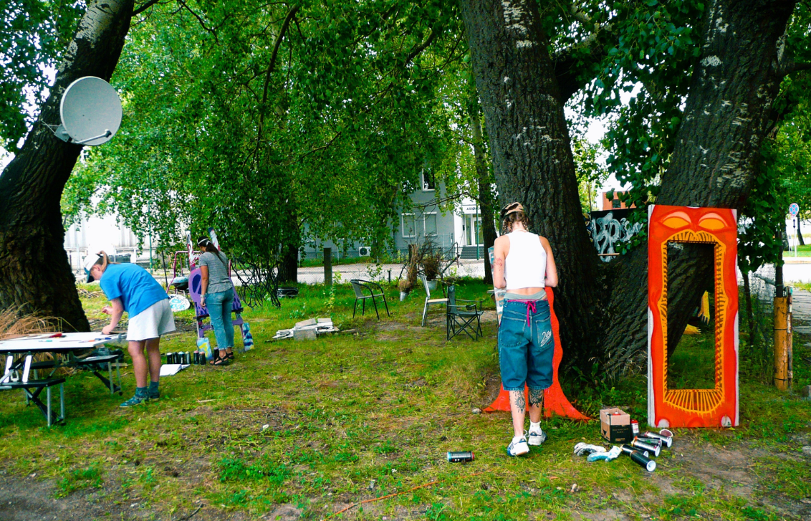
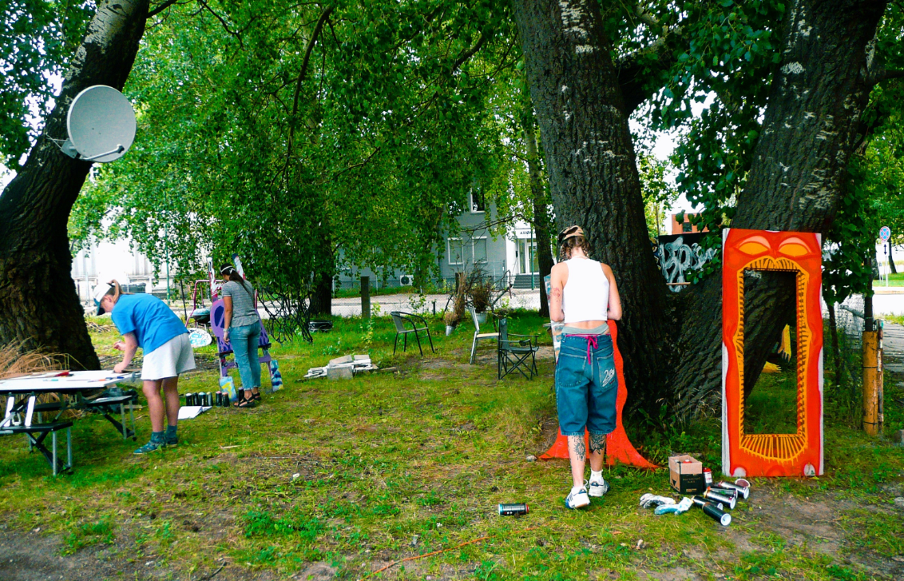

WHAT? WHERE? WHO?
KLAIPEDA is a city where art, having taken to the streets, lives an independent life. Unexpected stories come into life on the surfaces of walls, alleys and yards, sometimes historical, sometimes witty, and sometimes simply evocative and beautiful. Here, street art is not a decoration but a part of the city’s identity. It gives Klaipeda unexpected angles, liveliness and originality. Dozens of impressive wall paintings inspired by the city’s history, myths and everyday life.

 

Honorable Mentions
Vilkas
Zygimantas Amelynas is a Lithuanian contemporary artist and muralist born in 1988, based in Klaipeda. He studied applied graphics at the Vilnius Academy of Arts and is best known as a co-founder of the creative studio Gyva Grafika, a collective that works at the intersection of urban culture, street art, and public engagement. His practice blends bold graphic forms with context-aware visual language that dialogues with the surroundings, social environment, and local communities.
VILKAS work often activates overlooked surfaces and built environments, transforming them into visual narratives that resonate with local identity and everyday life. As an artist, he approaches walls not merely as backgrounds but as opportunities for community interaction and urban reinterpretation.

Address: J. Janionio g., 3, Klaipeda
Artists

PIJIN

SHEPA

ETTOJA